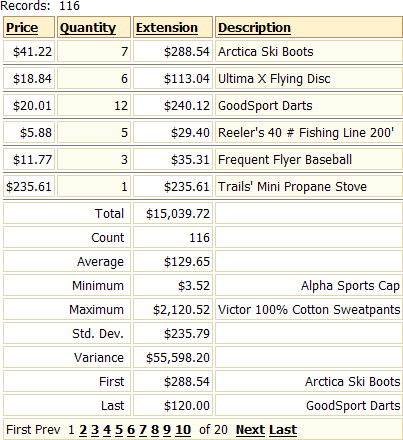

Adding Summary Fields to a Grid
A grid component can display summary values for fields. The summary types are:
Total (numeric fields only)
Count (numeric fields only)
Average (numeric fields only)
Minimum
Maximum
Standard Deviation (numeric fields only)
Variance (numeric fields only)
First
Last
You can have summaries of as many columns as you want. Summaries can appear on all pages or on the last page only. The following picture shows all summary types on the first page of a grid.

Define the Query
If you are using the Alpha Five AlphaSports database, create a tabular grid based on a view of the Invoice_Items and Product tables with the following fields:
Price - from the Invoice_Items table
Quantity - from the Invoice_Items table
Extension - a calculated field that is equivalent to Price * Quantity
Description - from the Product table
If you are using a SQL database, create a tabular grid based on a SQL Select statement that retrieves the following fields from the AlphaSports Invoice_Items and Product tables:
Price - from the Invoice_Items table
Quantity - from the Invoice_Items table
Extension - a calculated field that is equivalent to Price * Quantity
Description - from the Product table
Format the Fields
Display the Grid > Fields page.
Format the Price and Extension fields with currency formats.
Select the Extension field in the Selected Fields list.
In the Summary values section select the Total, Count, Average, Minimum, Maximum, Standard Deviation, Variance, First, and Last fields.
Add currency formats to the Summary values > Display format fields.
Display the Grid > Properties page.
Save the grid as "Summary_Fields".
Click Browser to see the results.
See Also